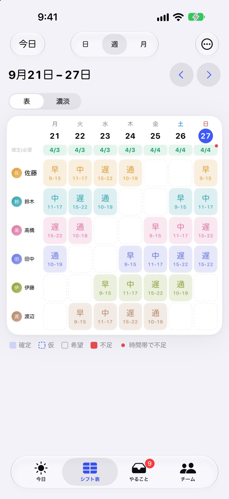
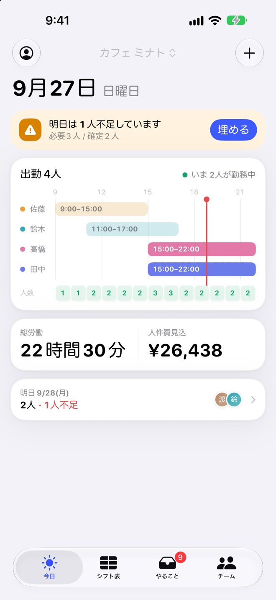
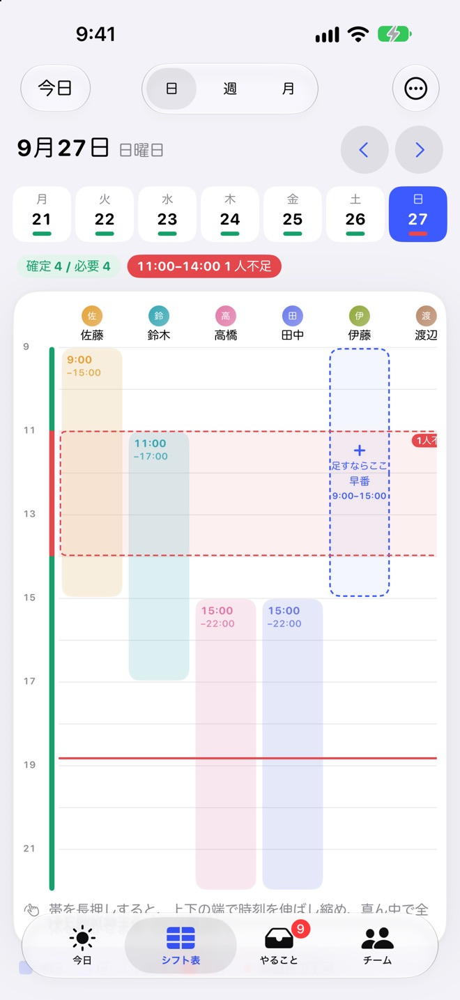
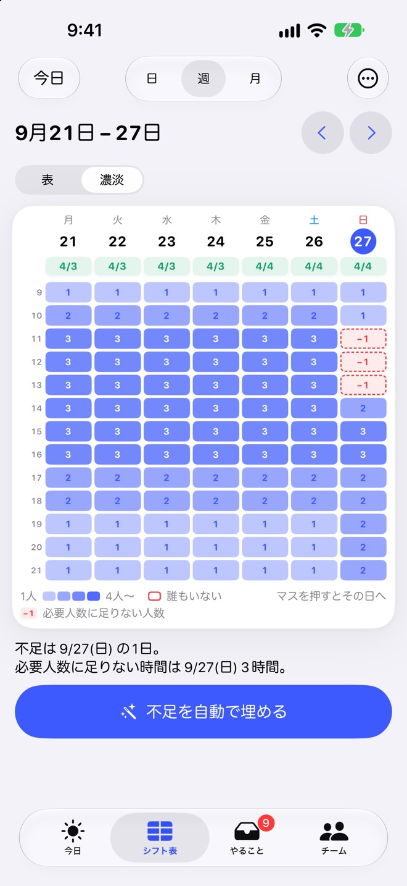
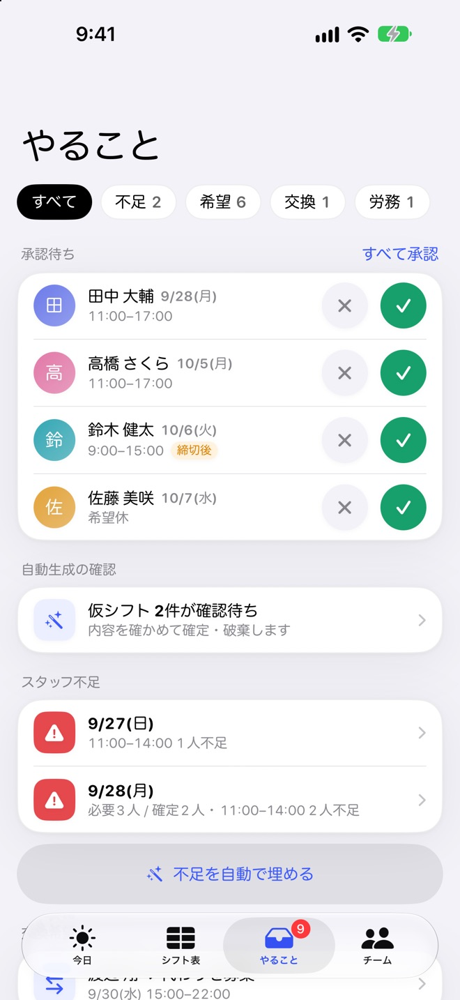
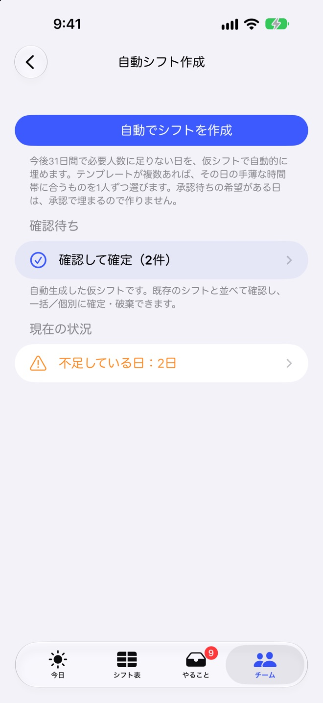
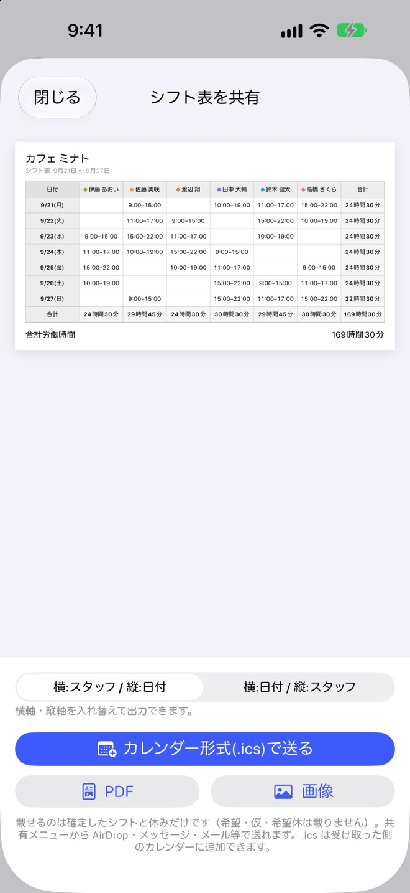

紙と同じ形の表に、タップで入れる
「スタッフ × 曜日」の表に、テンプレートをタップしてシフトを入れます。表の埋まり方を見ながら、次の日へ続けて入力できます。
- 前の週をまるごとコピー、仮のシフトを一括で確定
- 日・週・月の3つの表示を切り替え
- 曜日ごとの定休日に対応

紙やホワイトボード、表計算で組んでいるシフト表を、スマホの中へ。早番・遅番をタップするだけで1週間が埋まり、足りない日と時間帯はひと目でわかります。
App Store で見るiPhone・iPad（iOS 18 以上）／アカウント登録は不要です

紙のシフト表と同じ「スタッフ × 曜日」の表。スタッフの名前を入れたら準備は完了です。
早番・中番・遅番のテンプレートをタップして入力。前の週をまるごとコピーもできます。
足りない日は赤、必要人数に届かない時間は点線。「足すならここ」まで提案します。
飲食店・美容室・小売店・教室など、スタッフ数名〜20名ほどの小さなお店向けに作りました。
「スタッフ × 曜日」の表に、テンプレートをタップしてシフトを入れます。表の埋まり方を見ながら、次の日へ続けて入力できます。

曜日ごとの必要人数に加えて、時間帯ごとの必要人数（例: 毎日11時〜14時は3人）を設定できます。「日」の画面では、足りない時間を最も多く埋めるテンプレートを「足すならここ」で提案します。

週の表示は「表」と「濃淡」の2種類。濃淡では、1週間の時間ごとの人数が色の濃さでわかります。昼のピークの手薄な時間も見逃しません。

スタッフは、お店の端末の「スタッフ表示」から自分のシフトの確認と、希望シフト・希望休・交換希望の提出ができます。1週間分をまとめて出せて、締切後の提出には印が付きます。

必要人数とスタッフの希望から、足りない日の仮シフトを作ります。週の上限時間・入れない曜日・勤務の間隔・スタッフ間の公平さを守り、確定するまでは何も決まりません。

確定したシフトを端末のカレンダーへ書き出せます。シフト表は画像・PDFで共有して、印刷して貼り出すことも。集計はCSVで出力できます。

シフトを組んだあとの「今日」と「月末」も、アプリの中で済みます。
出勤するスタッフと時間帯、いま勤務中の人数を表示。明日の不足もここで知らせます。
スタッフ別の労働時間と人件費の見込み。深夜・時間外の割増も含め、給与の締め日に合わせて集計します。
アプリを開かずに、今日の出勤を確認できます。勤務の前日にはリマインドも届けられます。
スタッフ名で端末の検索からシフトを探したり、今日・明日のシフトを声で聞いたりできます。
「田中さんは来週火曜休み」と打つと、変更の案に直します。押すまで保存されません。
iOS 27・対応端末のみ。処理は端末の中で行います。
人件費やスタッフ情報は管理者PINで守ります。生体認証での解除にも対応しています。
アカウント登録は不要。データは端末の中に保存され、電波が届かない場所でも使えます。開発者がデータを集めることはなく、解析や広告の仕組みも入っていません。
シフトを組む機能は、プレミアムなしで使えます。お店が大きくなったら、買い切りのプレミアムへ。
在籍スタッフ3名まで
買い切り（1回のお支払い）
一度の購入で、同じ Apple アカウントのほかの端末でも復元できます。